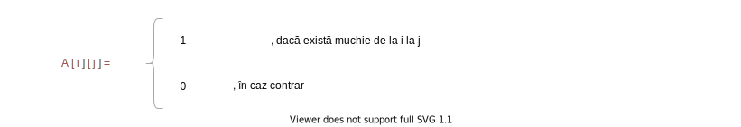
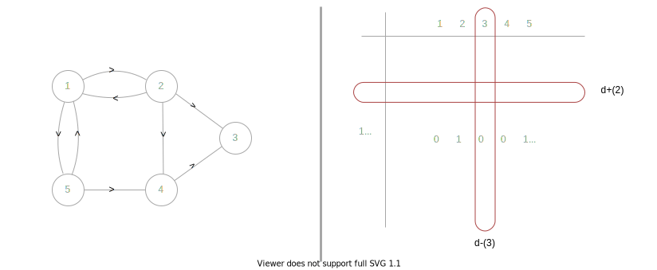
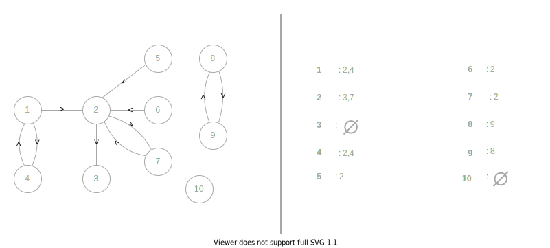
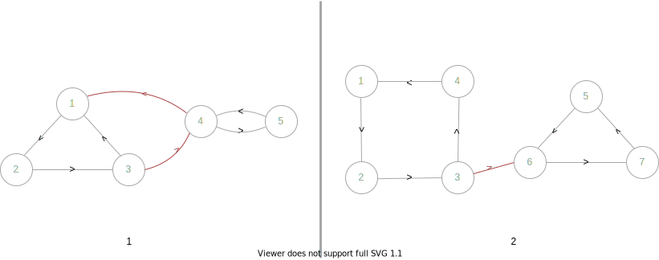
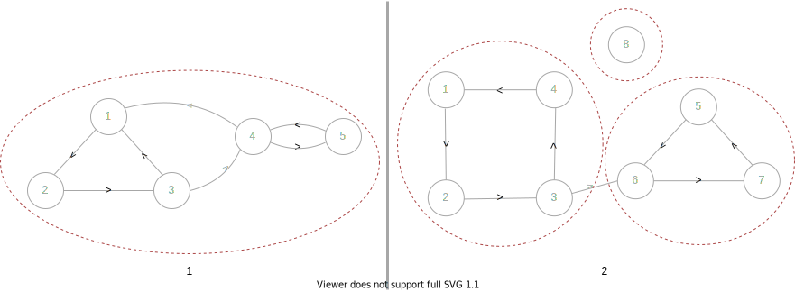
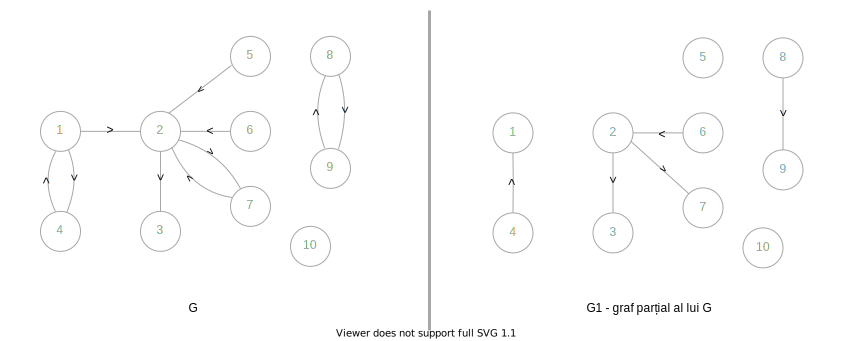
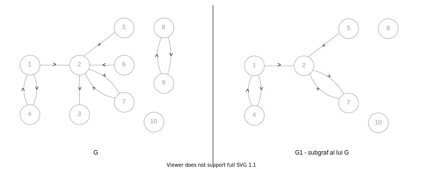

☞Am ales sa realizez acest proiect cu scopul de a explora si analiza conceptul de grafuri orientate, o tema fundamentala în domeniul teoriei grafurilor. Prin acest proiect, intentionez sa ajut la intelegerea mai buna a caracteristicilor, aplicatiilor si tehnicilor de algoritmica specifice acestui tip de graf, care sunt esentiale in rezolvarea unor probleme complexe din diverse domenii, cum ar fi informatica, retelele de comunicatie sau analiza structurilor de date. De asemenea, proiectul isi propune sa ofere o abordare practica si teoretica a problemelor ce pot fi modelate prin grafuri orientate, contribuind astfel la aprofundarea cunostintelor în domeniu.
☞Nodurile sunt punctele grafului orientat, alcatuind multimea nodurilor. Ele sunt etichetate în general fie cu cifre, fie cu litere, pentru a putea fi diferentiate. Multimea de noduri se noteaza cu X si contine toate nodurile grafului. Exemplu: Pentru graful descris mai sus, multimea nodurilor este X={1,2,3,4,5,6}.
☞Arcele sunt legaturi ordonate între nodurile grafului. Extremitatile unui arc se scriu între paranteze rotunde, ordinea acestora fiind importanta în determinarea sensului arcului. Fie (x,y) un arc:
☞Doua noduri x si y se numesc adiacente daca formeaza un arc. Exemplu: În graful de mai sus, nodul 2 este adiacent cu nodurile 1, 3 si 4.
☞Doua arce se numesc incidente daca au o extremitate comuna. Exemple (graful de mai sus):
☞Gradul unui nod x reprezinta numarul de noduri adiacente cu x (sau numarul de arce incidente cu x).
La grafuri orientate, avem doua tipuri de grade:
Gradul interior reprezinta numarul arcelor care au extremitatea finala în nod si este notat cu d-(x);
Gradul exterior reprezinta numarul arcelor care au extremitatea initiala în nod si este notat cu d+(x).
Exemple (din graful de mai sus):
d-(1)=1 ; d+(1)=2 ~ în nodul 1 „intra un arc si ies doua”
d-(3)=3 ; d+(3)=1
d-(6)=1 ; d+(6)=1
ℹ Un nod izolat în graful orientat are ambele grade egale cu 0.
Grafurile orientate au anumite proprietati, din care se pot genera mai multe formule utile:
Grafurile orientate pot fi memorate cu ajutorul unor structuri de date. Cele mai întâlnite la grafuri orientate sunt: matrice de adiacenta si liste de adiacenta.
Matricea de adiacenta este cea mai utilizata metoda de reprezentare a grafurilor orientate. Din reprezentarea acesteia putem deduce diverse informatii despre graf, precum multimea arcelor, gradele nodurilor, drumuri, circuite etc. Matricea de adiacenta a grafurilor orientate are urmatoarea structura:
Diferit fata de matricea de adiacenta de la grafuri neorientate, în aceasta vom pune valoarea 1 acolo unde linia este extremitatea initiala, iar coloana este extremitatea finala a fiecarui arc, pe rând. Exemplu de graf orientat si matricea sa de adiacenta:
ℹ Matricea este patratica si are atâtea linii si coloane câte noduri are graful.
Construirea matricei de adiacenta se face usor parcurgând pe linii fiecare nod, iar pentru arcele care „pleaca” din fiecare nod se marcheaza cu 1 cealalta extremitate a arcului.
Proprietati ale matricei de adiacenta
Lista de adiacenta a unui nod i contine toate nodurile spre care pleaca arce din i. Exemplul unui graf orientat si a listei sale de adiacenta:
Proprietati ale listelor de adiacenta
Fie G=(X,E) un graf orientat. Se numeste drum în graful G o succesiune de noduri cu proprietatea cã oricare douã noduri sunt unite de un arc. Fiind vorba despre un graf orientat, va trebui sã tinem cont de orientarea arcelor pentru a determina corect un drum.
Clasificarea drumurilor în graful orientat se poate face dupã douã criterii. În functie de noduri:

ℹ Lungimea unui drum este datã numãrul de arce pe care acesta îl contine.
Pentru graful anterior, drumul D3 este cel mai lung drum simplu (neelementar), iar D5 este cel mai lung drum elementar, de lungime 5.
Fie G=(X,E) un graf orientat. Se numeste circuit în graful G un drum simplu în care primul nod coincide cu ultimul. Intuitiv, circuitul diferã de notiunea de ciclu prin existenta „sensului de mers” al arcelor.
Circuitele dintr-un graf orientat se pot clasifica în functie de nodurile sale:
Fie G=(X,E) un graf orientat. Graful orientat G este tare conex dacã pentru oricare douã noduri x,y∈X existã cel putin un drum de la x la y si unul de la y la x. Numim astfel un graf orientat tare conex dacã putem gãsi drumuri în ambele sensuri între toate nodurile grafului (douã câte douã). ℹ Proprietatea de tare conex are la bazã notiunea de graf conex. Putem defini astfel un graf orientat ca fiind doar conex, atunci când nodurile sunt unite între ele doar într-un sens. Exemplu de graf tare conex si graf orientat conex:
Analizând exemplul:
Fie G=(X,E) un graf orientat. Se numeste componentã tare conexã a grafului G un subgraf al sãu, maximal în raport cu proprietatea de tare conexitate. Altfel spus, o componentã tare conexã este o parte din graf care are proprietatea de tare conexitate. ℹ Un graf tare conex este format dintr-o singurã componentã tare conexã. Un nod izolat reprezintã la rândul lui o componentã tare conexã. Exemple de componente tare conexe:
Observãm cã:
Fie G=(X,E) un graf orientat. Se numeste graf partial al lui G un graf G1=(X1,E1), cu proprietatea cã X1=X si E1 este o submultime a multimii E. Întelegem cã un graf partial contine aceleasi noduri, dar mai putine arce decât graful initial. Iatã un exemplu de graf orientat si un graf partial al sãu:
 ℹ Exemplul aratã doar unul dintre grafurile partiale posibile.
În stânga se aflã un graf orientat, iar în dreapta este un graf partial al sãu. În formarea submultimii de arce, au fost eliminate arcele ce au extremitatea initialã într-un nod impar.
☞ Numãrul maxim de grafuri partiale ale unui graf orientat cu m arce este: 2m.
Deducem aceastã formulã din faptul cã fiecare arc al grafului initial poate fi prezent sau absent în graful partial pe care îl formãm.
Fie G=(X,E) un graf orientat. Se numeste subgraf al lui G un graf G1=(X1,E1), cu proprietatea X1 este o submultime a lui X si E1=E. Astfel, subgraful contine mai putine noduri decât graful initial, pãstrând toate arcele care existã între nodurile rãmase (care au ambele extremitãti în submultimea aleasã de noduri). Un exemplu de graf orientat si un subgraf al sãu:

Exemplul aratã unul din subgrafurile posibile pentru graful G.
În exemplu, dacã eliminãm nodurile divizibile cu 3, ne rãmâne multimea de noduri X1={1,2,4,5,7,8,10}.
Odatã cu disparitia nodurilor 3, 6 si 9, dispar si arcele care au extremitãtile în aceste noduri.
ℹ Numãrul maxim de subgrafuri ale unui graf orientat cu n noduri este 2n-1.
Parcurgerea în adâncime (DFS) exploreazã cât mai adânc un graf înainte de a reveni la nodurile anterioare. Aceastã tehnicã poate fi implementatã recursiv sau iterativ, folosind o stivã.
ℹ DFS este utilã pentru determinarea componentelor conexe, detectarea ciclurilor si sortarea topologicã.
Algoritmul DFS (C++):
// DepthFirstCPP.cpp : Defines the entry point for the console application.
#include "stdafx.h"
#include
using namespace std;
int a[20][20], n, m, viz[100], gasit;
void dfmr(int nod)
{
cout << nod << " ";
viz[nod] = 1;
for (int k = 1; k <= n; k++)
if (a[nod][k] == 1 && viz[k] == 0)
dfmr(k);
}
void main()
{
int x, y, j;
cout << "numarul de noduri: ";
cin >> n;
cout << "numarul de muchii: ";
cin >> m;
for (int i = 1; i <= m; i++)
{
cout << "nodul sursa: ";
cin >> x;
cout << "nodul destinatie: ";
cin >> y;
a[x][y] = 1;
}
cout << endl << "matricea de adiacente" << endl;
for (int i = 1; i <= n; i++)
{
for (j = 1; j <= n; j++)
cout << a[i][j] << " ";
cout << endl;
}
cout << endl << "parcurgere in adancime incepand de la varful 1" << endl;
dfmr(1);
system("pause");
}
Parcurgerea în lãtime (BFS) exploreazã mai întâi toate nodurile de pe acelasi nivel înainte de a trece la nivelul urmãtor. BFS utilizeazã o coadã pentru gestionarea ordinii vizitãrii nodurilor.
ℹ BFS este utilã pentru gãsirea celui mai scurt drum într-un graf neponderat.
Algoritmul BFS:
// BreadthFirstCPP.cpp : Defineste punctul de intrare pentru aplicatia consolã.
#include „stdafx.h”
#include
folosind namespace std ;
int a [ 10 ][ 10 ], c [ 20 ], adicã [ 10 ];
int n , m , prim , ultim , varf ;
void bf_iterativ () //parcurgerea in latime
{
int k ;
while ( prim <= ultim )
{
varf = c [ prim ];
for ( k = 1 ; k <= n ; k ++)
if ( a [ varf ][ k ] == 1 && viz [ k ] == 0 ) //il adaug pe k in coada daca este vecin pt. varf si nu a fost vizitat
{
ultim ++;
c [ ultim ] = k ;
adicã [ k ] = 1 ;
}
prim ++;
}
}
void main ()
{
int x , y ;
/*fstream f; //memorare graf in matrice de adiacenta
f.open("muchii.txt", ios::in);
f >> n >> m;*/
cout << "nr de noduri= " ;
cin >> n ;
cout << "nr de multii= " ;
cin >> m ;
for ( int i = 1 ; i <= m ; i ++)
{
cout << "nod sursa: " ;
cin >> x ;
cout << "nod destinatie: " ;
cin >> y ;
//f >> x >> y;
a [ x ][ y ] = 1 ;
}
cout << "matricea de adiac " << endl ; // afisare matrice de adiacenta
for ( int i = 1 ; i <= n ; i ++)
{
for ( int j = 1 ; j <= n ; j ++)
cout << a [ i ][ j ] << " " ;
cout << endl ;
}
int nd ;
prim = ultim = 1 ;
cout << "varful de inceput=" ;
cin >> nd ; // varful de la care se porneste parcurgerea
viz [ nd ] = 1 ;
c [ prim ] = nd ;
bf_iterativ ();
for ( int i = 1 ; i <= ultim ; i ++) //afisarea cozii
cout << c [ i ] << " " ;
sistem ( „pauzã” );
}
Diferentele dintre DFS si BFS sunt prezentate în tabelul de mai jos:
| Caracteristicã | DFS | BFS |
|---|---|---|
| Structurã utilizatã | Stivã (recursiv) | Coada |
| Ordine de vizitare | Pe ramuri, adâncime maximã | Nivel cu nivel |
| Utilizare | Detectare cicluri, componente conexe | Gãsirea celui mai scurt drum |
| Complexitate timp | O(V + E) | O(V + E) |
Algoritmul lui Bellman-Ford este utilizat pentru a gãsi cel mai scurt drum de la un nod sursã la toate celelalte noduri, chiar si în grafuri cu ponderi negative.
ℹ Este mai lent decât Dijkstra, dar poate detecta cicluri negative.
Implementare C++:
#include <iostream>
#include <vector>
#include <limits>
using namespace std;
void BellmanFord(int n, int start, vector>& muchii) {
vector dist(n, INT_MAX);
dist[start] = 0;
for (int i = 0; i < n - 1; i++) {
for (auto& m : muchii) {
int u = m[0], v = m[1], cost = m[2];
if (dist[u] != INT_MAX && dist[u] + cost < dist[v]) {
dist[v] = dist[u] + cost;
}
}
}
for (int i = 0; i < n; i++) {
cout << "Distanta la " << i << " este " << dist[i] << "\n";
}
}
Floyd-Warshall este un algoritm pentru gãsirea celor mai scurte drumuri între toate perechile de noduri dintr-un graf orientat.
ℹ Functioneazã prin actualizarea treptatã a distantelor minime între perechi de noduri.
Implementare C++:
#include <iostream>
#include <vector>
#include <limits>
using namespace std;
void FloydWarshall(vector>& dist, int n) {
for (int k = 0; k < n; k++) {
for (int i = 0; i < n; i++) {
for (int j = 0; j < n; j++) {
if (dist[i][k] != INT_MAX && dist[k][j] != INT_MAX)
dist[i][j] = min(dist[i][j], dist[i][k] + dist[k][j]);
}
}
}
for (int i = 0; i < n; i++) {
for (int j = 0; j < n; j++) {
if (dist[i][j] == INT_MAX)
cout << "INF ";
else
cout << dist[i][j] << " ";
}
cout << "\n";
}
}
Algoritmul lui Dijkstra determinã cel mai scurt drum de la un nod sursã la toate celelalte noduri dintr-un graf cu ponderi pozitive.
ℹ Foloseste o coadã de prioritãti pentru optimizarea selectiei nodului cu cea mai micã distantã curentã.
Implementare C++:
#include <iostream>
#include <vector>
#include <queue>
#include <limits>
using namespace std;
void Dijkstra(int start, const vector>>& graf) {
int n = graf.size();
vector dist(n, INT_MAX);
priority_queue, vector>, greater<>> pq;
dist[start] = 0;
pq.push({0, start});
while (!pq.empty()) {
int d = pq.top().first, nod = pq.top().second;
pq.pop();
if (d > dist[nod]) continue;
for (auto vecin : graf[nod]) {
int v = vecin.first, cost = vecin.second;
if (dist[nod] + cost < dist[v]) {
dist[v] = dist[nod] + cost;
pq.push({dist[v], v});
}
}
}
for (int i = 0; i < n; i++) {
cout << "Distanta la " << i << " este " << dist[i] << "\n";
}
}
Diferentele dintre algoritmii Bellman-Ford, Floyd-Warshall si Dijkstra sunt prezentate în tabelul de mai jos:
| Caracteristicã | Bellman-Ford | Floyd-Warshall | Dijkstra |
|---|---|---|---|
| Tip graf | Orientat, ponderat (inclusiv ponderi negative) | Orientat, ponderat (doar ponderi pozitive sau negative) | Orientat, ponderat (doar ponderi pozitive) |
| Tip problemã | Drum minim de la un singur nod | Drum minim între toate perechile de noduri | Drum minim de la un singur nod |
| Complexitate | O(VE) | O(V3) | O((V+E) log V) |
☞https://www.pbinfo.ro/articole/509/grafuri-orientate
☞https://www.ezinfo.ro/XI/gorientate/
☞https://ro.wikipedia.org/wiki/Graf_orientat
☞https://www.panseluta.ro/c/Grafuri/Parcurgerea%20Grafurilor%20Orientate.pdf
☞Manual informatica clasa a XI-a